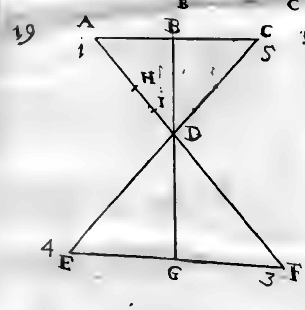

Proposition XVII: Ten Cases of Element IV & Folding Equivalence¶



Proposition XVII · Problem X (pp. 23–25, Tab. 2, Figs. 18–19 & Tab. 1, Fig. 7)
With the figure of the Fourth Element set forth, out of the five ratios of which we treated in that very element, any three being given, it is proposed to investigate the remaining two.
This problem has ten cases, like the preceding.
(Tab. 2, Fig. 18) I. Let there be given three ratios ED to DC as 5 to 4, GD to DB as 6 to 7, and FD to DA as 1 to 3 (in this first case alone the two straight lines AC, EF must not be parallel to each other) it is required therefore to trace out the remaining two ratios, that is, AB to BC and EG to GF. Since therefore AC, EF are not parallel, produced they will meet, as at H; thus because in the figure ACHFED of the First Element, the two ratios ED to DC as 5 to 4 and AD to DF as 3 to 1 are known, we shall make manifest also (from the first case of the sixth problem) the remaining two ratios, and EF will be to FH as 11 to 16; and AC to AH as 11 to 20. Again in another figure GFHBAD of the same Element are had the two ratios AD to DF as 3 to 1 and BD to DG as 7 to 6; therefore, as above, we shall give the remaining two, namely HF to FG as 28 to 11, and HA to AB as 24 to 11. But because CA to AB
f. 0041 · p. 24is compounded of the ratios AC to AH and AH to AB, namely of the numbers 11 to 20 and 24 to 11, from which is compounded the ratio 66 to 55; CA to AB will be as 66 to 55, and by dividing, CB to BA as 11 to 55, indeed as 1 to 5. Similarly, because EF to FG is compounded of the ratios of straight lines EF to FH and FH to FG, namely of the numbers 11 to 16 and 28 to 11, from which arises the ratio 11 to 6 2/7, or 77 to 44; by dividing, EG to GF will be as 33 to 44, or as 3 to 4.
II. Let the said figure of the Fourth Element be supposed in any manner, and having the three ratios AB to BC as 5 to 1, BD to DG as 7 to 6, and EG to GF as 3 to 4, let it be required to trace out the remaining two ratios, namely ED to DC and FD to DA. Compounded is straight line FD to DA, namely weight A to F, of the ratios of weights A to B, B to G, and G to F, namely of straight lines CB to CA, GD to DB, and EF to EG, indeed of the ratios 1 to 6, 6 to 7, and 7 to 3; wherefore FD to DA is as 1 to 3. By the same reason, because ED to DC, that is, heavy body C to E, is compounded of the ratios of heavy bodies C to B, B to G, and G to E, namely of straight lines AB to AC, GD to DB, and EF to FG; indeed of the ratios 5 to 6, 6 to 7, and 7 to 4; ED to DC will be as 5 to 4.
The three ratios AD to DF as 3 to 1, FG to GE as 4 to 3, and ED to DC as 5 to 4 being known, if we suspend heavy bodies according to those three known ratios, we shall obtain the remaining two AB to BC as 5 to 1, and GD to DB as 6 to 7.
The same will happen if the three ratios be ED to DC as 3 to 1; CB to BA as 4 to 3, and AD to DF as 5 to 4, for we shall find EG to GF as 5 to 1, and BD to GD as 6 to 7.
(Tab. 2, Fig. 19) V. Let there be had three ratios FG to GE as 4 to 3, ED to DC as 5 to 4, and CB to BA as 1 to 5; we must find the remaining two BD to DG and FD to DA, which (lest we forget the method we have used from the beginning) we shall perform thus. Let it be made as 3 to 4, that is, as straight line GE to FG, so weight F 3 to weight E 4; and as CD to DE, that is, as 4 to 5, so weight E 4 to weight C 5; and finally as AB to BC, that is, as 5 to 1, so weight C 5 to weight A 1. Since point B is the center of gravity of heavy bodies A 1, C 5, and likewise G the center of gravity of weights E 4, F 3, on balance-beam GDB will be the center of gravity of all heavy bodies A 1, C 5, E 4, F 3; now D is the center of gravity of the two heavy bodies E 4, C 5; therefore if it be possible that we posit some other point h as the center
f. 0042 · p. 25of heavy bodies A 1, F 3, there will be on straight line DH, say at I, the center of gravity of all heavy bodies, and therefore (as was shown before) it would not be on balance-beam BDG, because it is unique; and since this cannot happen, the same point D must be the center of gravity of all heavy bodies, and likewise of heavy bodies A 1, F 3, and of heavy bodies E 4, C 5; on that account, as B 6 to G 7, so straight line GD to DB, and as A 1 to F 3, so FD to DA.
VI. But if the three known ratios be EG to GF as 4 to 3; FD to DA as 5 to 4; and AB to BC as 1 to 5, by the same reason we shall know the remaining two GB to DB as 6 to 7; and ED to DC as 1 to 3.
(Tab. 1, Fig. 7) VII. Having the three ratios ED to DC as 1 to 2, AB to BC of equality, and GD to DB as 1 to 3, let it be required to investigate the remaining two, namely EG to GF and AD to DF. Compounded is GF to FE, namely weight E to G, of the ratios of heavy bodies E to C, C to B, and B to G, namely of straight lines CD to CE, AB to AC, and GD to DB; indeed of the ratios of the numbers 2 to 1, 1 to 2, and 2 to 6, wherefore GF to FE is as 2 to 6, and by converting, and thence dividing, EG to GF will be as 2 to 1. Again, because DF to DA, namely weight A to F, is compounded of the ratios of heavy bodies A to C, C to E, and E to F, namely of straight lines CB to BA, ED to DC, and FG to GE; or of the ratios 1 to 1, 1 to 2, and 2 to 4; DF to FA will be as 1 to 4.
And the other three cases we shall show in the same way; for they are similar to this seventh. The whole problem is therefore established.
Corollary.
For if angle ADC be conceived above angle EDF, line AD will fall upon line ED, BD upon DG, and CD upon DF; and line ABC will cut lines ED, GD, FD, whence it will come about that the figure of the Fourth Element passes over into that of the Third, and conversely the latter into the former, if that angle be restored to its former position; wherefore if in the figure of the Fourth Element for the ratios ED to DC, FD to DA, there be taken the two ED to DA and FD to DC, thence any three ratios, as we have said, being given, we shall also make known the remaining two; and we shall perform the same in the figure of the Third Element by changing the ratios AE to EF, CD to DE into the ratios AE to ED and CE to EF.